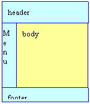

See:
Description
| Interface Summary | |
|---|---|
| AttributeDefinition | Attribute definition used in a component definition. |
| ComponentDefinitionsFactory | Deprecated. Use DefinitionsFactory instead. |
| Controller | A controller is a piece of code called before rendering a jsp page. |
| DefinitionsFactory | Tiles Definition factory. |
| Class Summary | |
|---|---|
| ActionController | Struts wrapper implementation of Controller. |
| ComponentContext | Component context. |
| ComponentDefinition | Definition of a template / component attributes. |
| ControllerSupport | Basic implementation of Controller. |
| DefinitionAttribute | Attribute representing a Component Definition. |
| DefinitionNameAttribute | Component attribute. |
| DefinitionsFactoryConfig | A TilesFactoryConfig object hold configuration attributes for a tile definition factory. |
| DefinitionsUtil | Deprecated. Use TilesUtil.createDefinitionsFactory(ServletContext, DefinitionsFactoryConfig) |
| DirectStringAttribute | Component attribute. |
| PathAttribute | Component attribute. |
| RedeployableActionServlet | WebLogic (at least v6 and v7) attempts to serialize the TilesRequestProcessor when re-deploying the Webapp in development mode. |
| TilesPlugin | Tiles Plugin used to initialize Tiles. |
| TilesRequestProcessor | RequestProcessor contains the processing logic that the Struts controller servlet performs as it receives each servlet request from the container. |
| TilesUtil | Class containing utility methods for Tiles. |
| TilesUtilImpl | Default implementation of TilesUtil. |
| TilesUtilStrutsImpl | TilesUtil implementation for Struts 1.1 with one single factory. |
| TilesUtilStrutsModulesImpl | Implementation of TilesUtil for Struts multi modules. |
| UntypedAttribute | Common implementation of attribute definition. |
| UrlController | Tiles controller including a local URL. |
| Exception Summary | |
|---|---|
| DefinitionsFactoryException | Exception thrown when an error occurs while the factory tries to create a new instance mapper. |
| FactoryNotFoundException | Exception thrown when definitions factory is not found. |
| NoSuchDefinitionException | Exception thrown when a definition is not found. |
| TilesException | Root class for all Tiles-exceptions. |
Package org.apache.struts.tiles Description
Introduction
The Tiles framework allows building pages by assembling reusable Tiles. As an example, the page in the next figure can be build by assembling a header, a footer, a menu and a body.

Each Tiles (header, menu, body, ...) is a JSP page and can itself be build by assembling other Tiles.
Using Tiles can be compared as using Java methods: You need to define the Tiles (the method body), and then you can "call" this body anywhere you want, passing it some parameters. In Tiles, parameters are called "attributes" in order to avoid confusion with the request parameters.
The Tiles body can be a simple JSP page, a Struts action or any URI pointing to a resource inside the current web site.
Inserting the body, or calling it, is done with the tag <tiles:insert ...> anywhere in a JSP page. Insertion can also be done by specifying a definition name as the path of a Struts forward or as input, forward or include attributes of a Struts action.
Tiles bodies are used to create layouts, reusable parts, ... Tiles insertions are used to insert Tiles. The same Tiles can be reused several times in the same site, or even in the same page.
Insertion of a Tiles body can be associated to a logical name in what Tiles calls a "definition". A definition contains a logical name, a page used as body and some attribute values. The definition declaration doesn't insert the associated Tiles body. It just associates it with the name. A definition name can be used anywhere insertion of a Tiles body can occur. The associated Tiles body is then inserted with associated attributes.
The definition declarations can be done in JSP pages or in one or more centralized files. A definition can extend another one, overload some attributes, add new attributes ... This allows the declaration of a "master" definition declaring the common layout, header, menu and footer. All other definitions extend this master layout thereby making it possible to change the entire site look & feel simply by changing the master definition.
Simple Examples
Insert a JSP page
<tiles:insert page="/layouts/commonLayout.jsp" flush="true" />
This example inserts the specified page in place of the tag. The page attribute is any valid URL pointing to a resource inside the current site.
Insert a Tiles passing some attributes
<tiles:insert page="/layouts/classicLayout.jsp" flush="true"> <tiles:put name="title" value="Page Title" /> <tiles:put name="header" value="/common/header.jsp" /> <tiles:put name="footer" value="/common/footer.jsp" /> <tiles:put name="menu" value="/common/menu.jsp" /> <tiles:put name="body" value="/tiles/mainBody.jsp" /> </tiles:insert>
This example inserts the specified page, passing it the attributes. Attributes are stored in a Tiles context which is passed to the inserted pag and can then be accesssed by their names.
Retrieve an attribute value as String
<tiles:getAsString name="title" />
This example retrieves the value of the attribute "title" and prints it as a String in the current output stream. The method toString() is applied on the attribute value, allowing to pass any kind of object as value.
Insert Tiles referenced by an attribute
<tiles:insert attribute='menu' />
This inserts the Tiles referenced by the attribute "menu" value. The specified attribute value is first retrieved from current Tiles's context, and then the value is used as a page target to insert.
Classic Layout
This example is a layout assembling a page in the classic header-footer-menu-body fashion.
<%@ taglib uri="/WEB-INF/struts-tiles.tld" prefix="tiles" %>
<HTML>
<HEAD>
<link rel="stylesheet" href="<%=request.getContextPath()%>/layouts/stylesheet.css"
type="text/css"/>
<title><tiles:getAsString name="title"/></title>
</HEAD>
<body>
<table border="0" width="100%" cellspacing="5">
<tr>
<td colspan="2"><tiles:insert attribute="header" /></td>
</tr>
<tr>
<td width="140" valign="top">
<tiles:insert attribute='menu' />
</td>
<td valign="top" align="left">
<tiles:insert attribute='body' />
</td>
</tr>
<tr>
<td colspan="2">
<tiles:insert attribute="footer" />
</td>
</tr>
</table>
</body>
</html>
The layout is declared in a JSP page (ex: /layouts/classicLayout.jsp). It can be used in conjunction with the tag described in "Insert a page passing some attributes".
Definitions
A definition associates a logical name with the URL of a Tiles to be inserted and some attribute values. A definition doesn't insert the Tiles. This is done later using the definition name. A definition name can be inserted as often as you want in your site, making it easy to reuse a Tiles.
A definition can extend another definition and overload some attributes or add new ones. This makes easy factorization of definitions differing by some attributes. For example, you can define a master definition declaring the main header, menu, footer, and a default title. Then let each of your page definitions extend this master definition and overload the title and the body.
Definitions can be declared in a JSP page, or in one or more centralized files. To enable the definitions from centralized files, you need to initialize the "definitions factory&" which will parse the definitions from the files and provide them to the Tiles framework.
Enabling Definition Factory
To enable Tiles definitions described in one or more files, you need to write these files and to initialize the definition factory.
Initialization is different depending on the Struts version you use, or if you do not use Struts at all.
Struts1.1
Use the Tiles plug-in to enable Tiles definitions. This plug-in creates the definition factory and passese it a configuration object populated with parameters. Parameters can be specified in the web.xml file or as plug-in parameters. The plug-in first reads parameters from web.xml, and then overloads them with the ones found in the plug-in. All parameters are optional and can be omitted. The plug-in should be declared in each struts-config file:
<plug-in className=&"org.apache.struts.tiles.TilesPlugin&" >
<set-property property=&"definitions-config&"
value=&"/WEB-INF/tiles-defs.xml,
/WEB-INF/tiles-tests-defs.xml,/WEB-INF/tiles-tutorial-defs.xml,
/WEB-INF/tiles-examples-defs.xml&" />
<set-property property=&"moduleAware&" value=&"true&" />
<set-property property=&"definitions-parser-validate&" value=&"true&" />
</plug-in>
- definitions-config: (optional)
- Specify configuration file names. There can be several comma separated file names (default: ?? )
- definitions-parser-validate: (optional)
- Specify if XML parser should validate the Tiles configuration
file
- true : validate. DTD should be specified in file header (default)
- false : no validation
- Specify if XML parser should validate the Tiles configuration
file
- moduleAware: (optional)
- Specify if the Tiles definition factory is module aware. If true (default),
there will be one factory for each Struts module.
If false, there will be one common factory for all module. In this later case,
it is still needed to declare one plugin per module. The factory will be
initialized with parameters found in the first initialized plugin (generally the
one associated with the default module).
- true : Tiles framework is module aware
- false :Tiles framework has one single factoy shared among modules (default)
- Specify if the Tiles definition factory is module aware. If true (default),
there will be one factory for each Struts module.
If false, there will be one common factory for all module. In this later case,
it is still needed to declare one plugin per module. The factory will be
initialized with parameters found in the first initialized plugin (generally the
one associated with the default module).
- tilesUtilImplClassname: (optional - for advanced user)
- Specify The classname of the TilesUtil implementation to use. The specified class should
be a subclass of TilesUtilStrutsImpl. This option disable the moduleAware option.
Specifying &"TilesUtilStrutsImpl&" is equivalent to moduleAware = false.
Specifying &"TilesUtilStrutsModuleImpl&" is equivalent to moduleAware = true. This option is taken into account only once, when it is first encountered. To avoid problems, it is advice to specify the same values in all TilesPlugin declaration.
- Specify The classname of the TilesUtil implementation to use. The specified class should
be a subclass of TilesUtilStrutsImpl. This option disable the moduleAware option.
The TilesPlugin class creates one definition factory for each struts module.
If the flag moduleAware is false, only one shared factory is created for all modules. In this later case, the factory is initialized with parameters found in the first plugin. The plugins should be declared in all modules, and the moduleAware flag should be the same for the entire application.
Paths found in Tiles definitions are relative to the main context.
You don't need to specify a TilesRequestProcessor, this is automatically done by the plug-in. If, however, you want to specify your own RequestProcessor, it should extend the TilesRequestProcessor. The plug-in checks this constraint.
Struts1.0.x
You need to use a special servlet extending the Struts servlet. This is specified in the web.xml file of your application:
<servlet>
<servlet-name>action</servlet-name>
<servlet-class>org.apache.struts.tiles.ActionComponentServlet</servlet-class>
<!-- Tiles Servlet parameter
Specify configuration file names. There can be several comma
separated file names
-->
<init-param>
<param-name>definitions-config</param-name>
<param-value>/WEB-INF/tiles-defs.xml</param-value>
</init-param>
<!-- Tiles Servlet parameter
Specify if XML parser should validate the Tiles configuration file(s).
true : validate. DTD should be specified in file header.
false : no validation
-->
<init-param>
<param-name>definitions-parser-validate</param-name>
<param-value>true</param-value>
</init-param>
...
</servlet>
Without Struts
Tiles can be used without Struts. To initialize the definition factory, you can use the provided servlet. Declare it in the web.xml file of your application:
<servlet>
<servlet-name>action</servlet-name>
<servlet-class>org.apache.struts.tiles.TilesServlet</servlet-class>
<init-param>
<param-name>definitions-config</param-name>
<param-value>/WEB-INF/tiles-defs.xml</param-value>
</init-param>
<init-param>
<param-name>definitions-parser-validate</param-name>
<param-value>true</param-value>
</init-param>
...
The parameters are the same as for Struts1.1 or 1.0.
Definition File Syntax
The definition file syntax can be found in the tiles-config_1_1.dtd file.
Following is a simple example:
<!DOCTYPE tiles-definitions PUBLIC
&"-//Apache Software Foundation//DTD Tiles Configuration//EN&"
&"http://struts.apache.org/dtds/tiles-config_1_1.dtd&">
<!-- Definitions for Tiles documentation -->
<tiles-definitions>
<!-- ========================================================== -->
<!-- Master definition -->
<!-- ========================================================== -->
<!-- Main page layout used as a root for other page definitions -->
<definition name=&"site.mainLayout&" path=&"/layouts/classicLayout.jsp&">
<put name=&"title&" value=&"Tiles Blank Site&" />
<put name=&"header&" value=&"/tiles/common/header.jsp&" />
<put name=&"menu&" value=&"site.menu.bar&" />
<put name=&"footer&" value=&"/tiles/common/footer.jsp&" />
<put name=&"body&" value=&"/tiles/body.jsp&" />
</definition>
<!-- ========================================================== -->
<!-- Index page definition -->
<!-- ========================================================== -->
<!-- This definition inherits from the main definition.
It overloads the page title and the body used.
Use the same mechanism to define new pages sharing common
properties (here header, menu, footer, layout)
-->
<definition name=&"site.index.page&" extends=&"site.mainLayout&" >
<put name=&"title&" value=&"Tiles Blank Site Index&" />
<put name=&"body&" value=&"/tiles/body.jsp&" />
</definition>
</tiles-definition>
Debugging
To debug a page made of Tiles, you can use following advices:
- Check each Tiles separatly. Try to access nested Tiles directly to test if thes work properly.
- Enable Tiles logging. See the commons-logging package help.
|
||||||||||
| PREV PACKAGE NEXT PACKAGE | FRAMES NO FRAMES | |||||||||
Copyright © 2000-2008 Apache Software Foundation. All Rights Reserved.